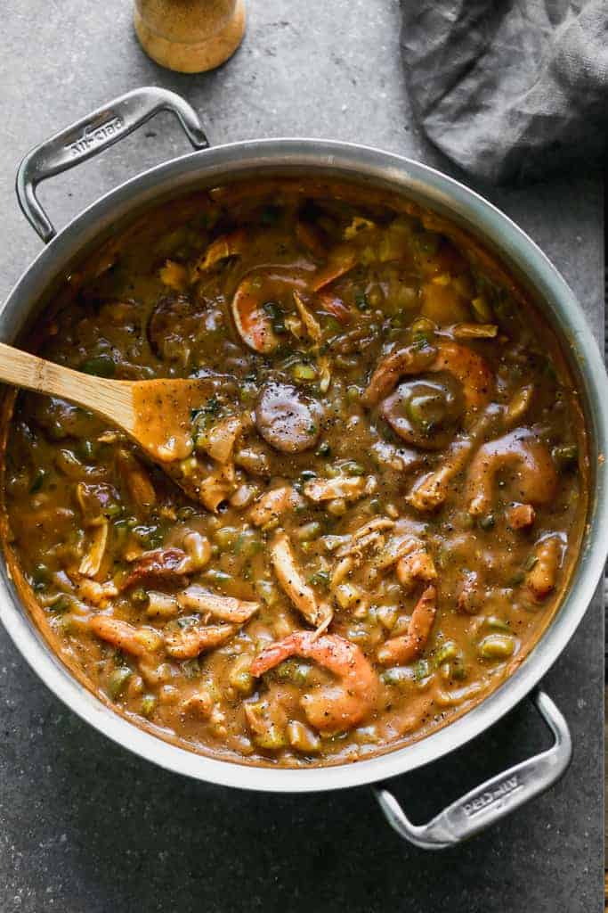

Home Page | Stinky Cheese Pizza | Red Cheese Meat Pasta
Yummy Garbage Gumbo

Remi has compiled a lovely array of the finest garbage in all of France to bring
you a gumbo you will die for!
All the garbage you will need to make this dish a yummy reality!
- 4 tbsp. butter
- 1/4 c. all-purpose flour
- 1 small yellow onion
- 1 medium green bell pepper, chopped
- 2 celery ribs, chopped
- 2 cloves garlic, minced
- 12 oz. andouille sausage, sliced into 1/2" pieces
- 1 tbsp. cajun seasoning (without salt)
- Kosher salt
- Freshly ground black pepper
- 1 bay leaf
- 1 (15-oz.) can fire-roasted diced tomatoes
- 4 c. low-sodium chicken broth
- 1 lb. medium shrimp, peeled and deveined
- 3 green onions, sliced
- cooked white rice, for serving!
It's time to enter our FLOW STATE
- a large, deep skillet over medium-low heat, melt butter, then add flour. Cook, stirring constantly, until dark caramel colored, about 10 minutes.
- Add onions, peppers, and celery, and stir until softened, about 5 minutes more. Stir in garlic and sausage, then season with Cajun seasoning, salt, and pepper. Stir in bay leaf, diced tomatoes, and chicken broth and bring to a boil. Reduce heat to low and simmer until thickened, stirring occasionally, about 1 hour.
- In the last 10 minutes of cooking, add shrimp. Once shrimp is pink and cooked through, taste and adjust seasonings. Stir in green onions, reserving some for garnish.
- Serve spooned on top of white rice.